Internal admin platform
Connecting multiple customer data sources into a more functional platform
I designed the Ledger Internal Admin platform, a critical backbone for our day-to-day operations. This centralized
portal empowers teams across Sales, Support, Engineering, Product, and Data Science to seamlessly collaborate and manage
core functions.
Employees can securely access and manage customer and product data, log in, view customer progress, and
track sales performance – all within a user-friendly interface designed to adapt to their needs.
Release date:
September 2023
My role:
User research
Product design
Team:
Will S.(PM)
Gerardo R.(ENG)
Matt W.(ENG)
Jason Y.(ENG)
01. Background
Initially, the customer and sales teams used platforms like Google Docs, Notion, and Retool to manage customer data. These tools led to segregated knowledge and inefficiency, prolonging customer onboarding up to a month. When those options proved inadequate, we introduced a rudimentary admin portal (v0.5).
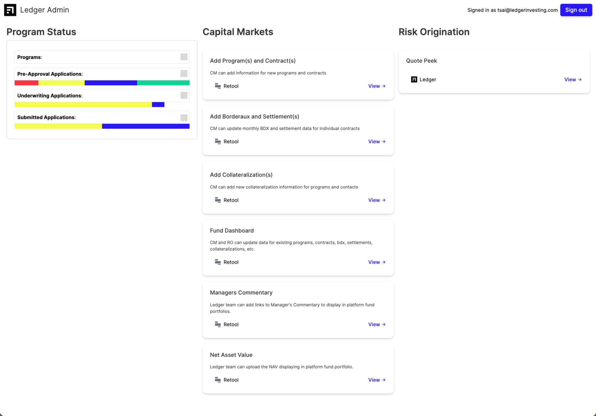The admin portal (v0.5) primarily used Retool functionalities but began integrating features like the program status tracker to streamline workflow and improve efficiency. Engineers used the Signature UI design system system for data tables to save time, but navigation and responsiveness were not fully addressed.
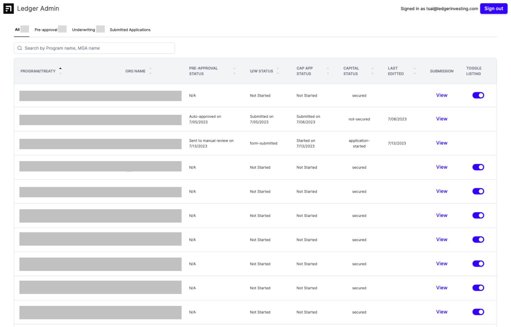My aim was to unify teams along the customer journey, ensuring alignment by measuring sales cycle times. The initial versions relied on a spreadsheet-like format using Retool-linked data, which had limitations. Navigating these tables took significant time, making it difficult to identify key details quickly.
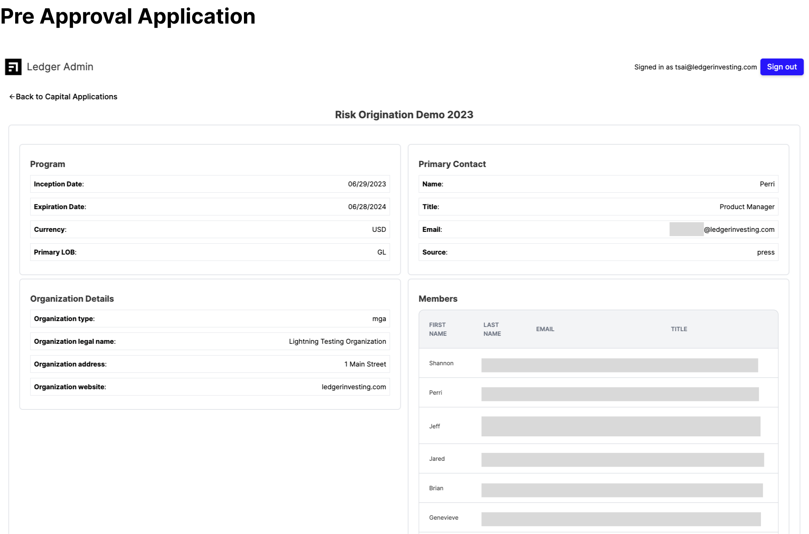How can we improve the way our customer teams work together?
02. Research + audit
To build a functional and well-designed admin panel, we engaged with the Ledger teams to understand their pain points, goals, and expectations. We explored the v0.5 platform, mapping out tasks and identifying challenges. The v0.5 platform was a proof of concept, hosting Retool app links but lacking usability and consistent use. Interviews and surveys revealed issues like outdated information and difficulty finding sources. To address these, I mapped user flows and annotated feedback to track improvements.
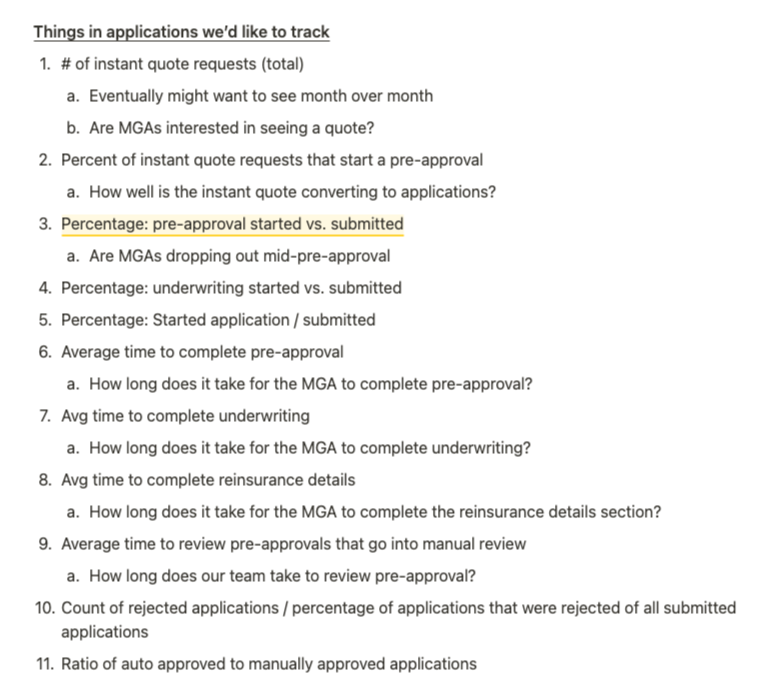The PM and I developed low-fidelity wireframes to discuss design directions with stakeholders and identify technical challenges early on. This proactive approach allowed us to prioritize functionalities and plan for potential roadblocks. My research focused on data dashboard designs, emphasizing customization and consistency.
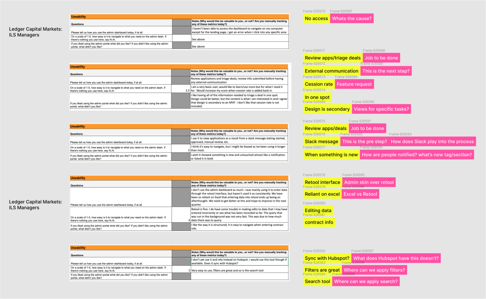We prioritized quick wins and defined the scope for v1.0. Building a centralized hub required considering all team needs, planning for customer hand-offs, and ensuring up-to-date information was accessible. Our goal was to enhance team collaboration with a customized, centralized admin panel.
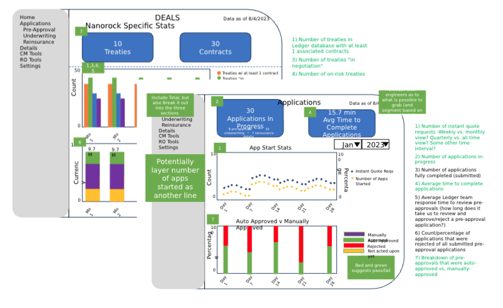 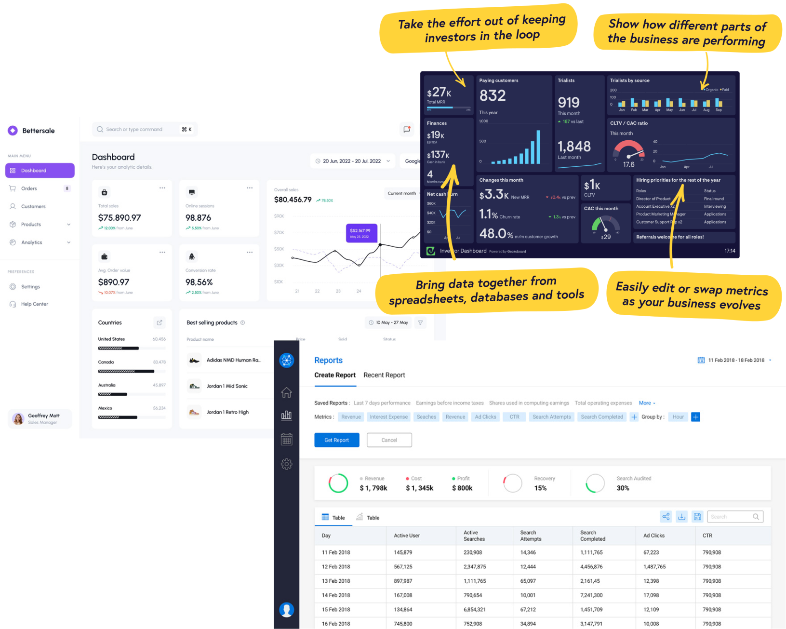 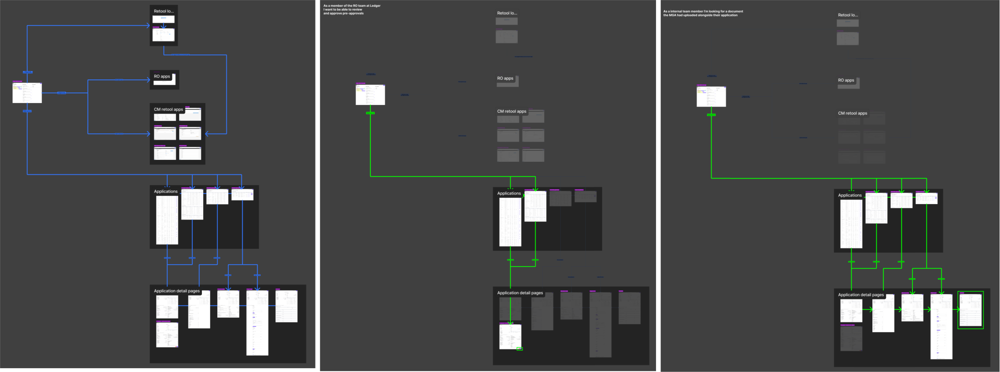 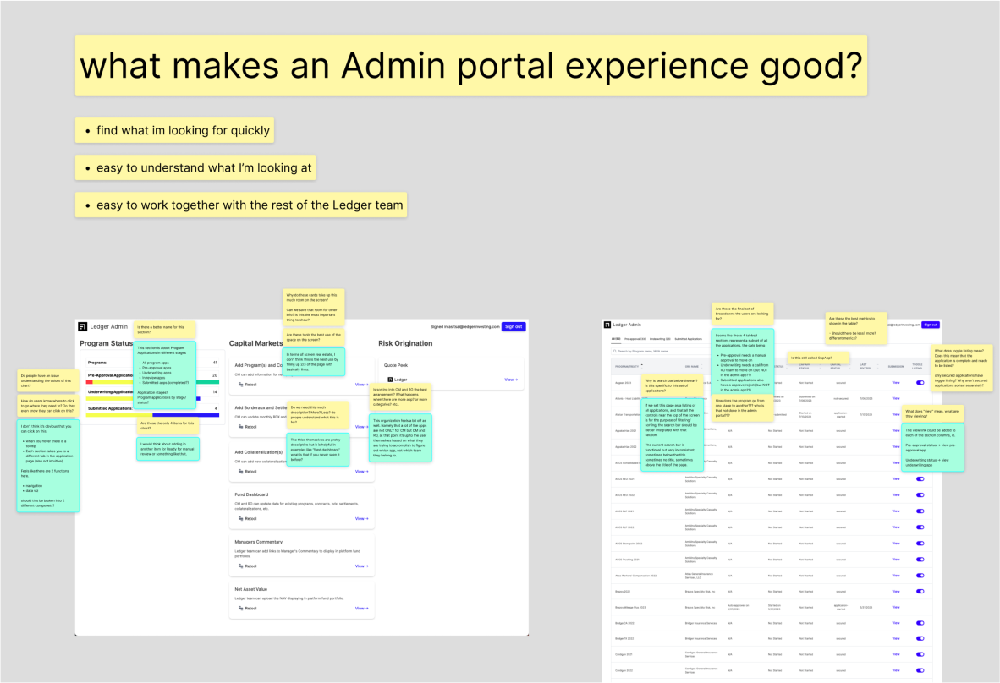03. Quick wins + Lofi
After many rounds of revisions and updates, we launched v1.0 of the Admin portal. The main layout now features a consistent side bar menu, with the most-used 'All programs' at the top for easy access. There is space for future items like 'My settings' or 'BDX consolidation'. To address findings from team interviews, we prioritized quick wins for the platform and defined the scope and scale for v1.0.
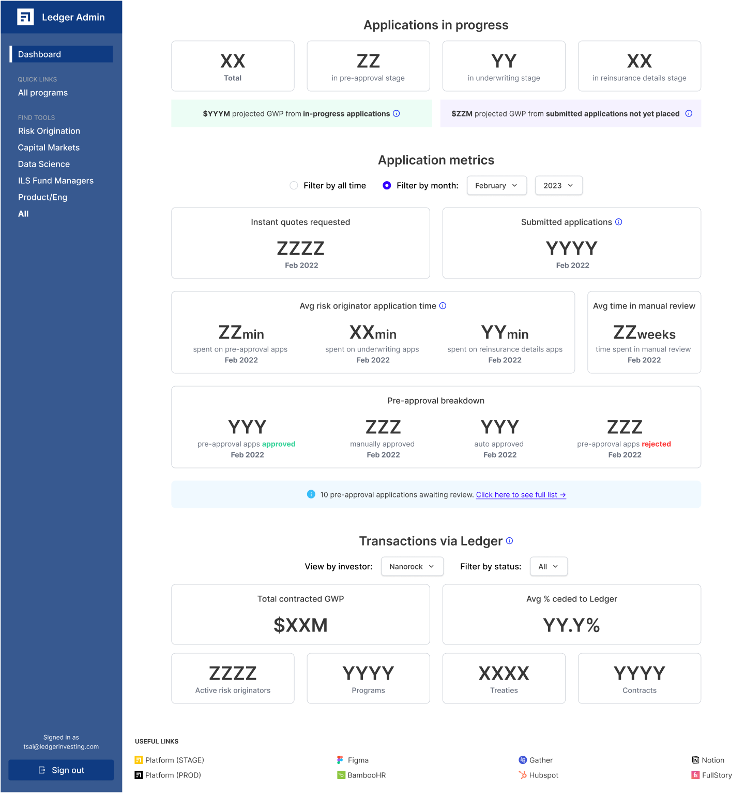Consistency and heuristics were key focuses, as the existing platform had many inconsistencies in layout, formatting, and navigation. Interviews helped identify UX bottlenecks, particularly in status and feedback for customer profiles. This feedback guided our strategy, aiming for a more unified and user-friendly experience.
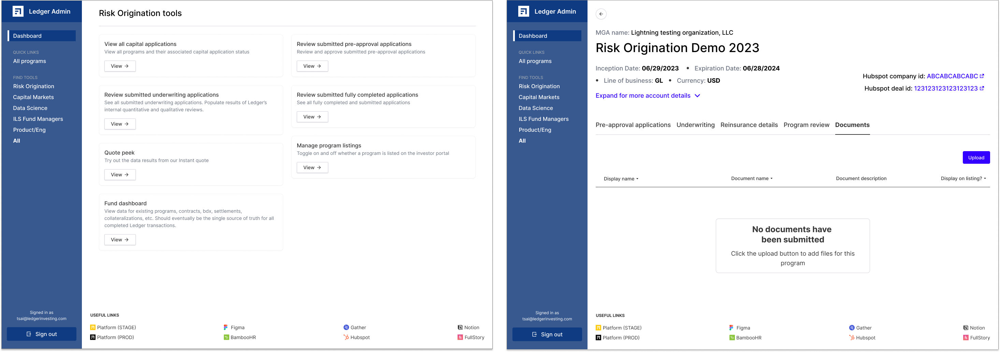 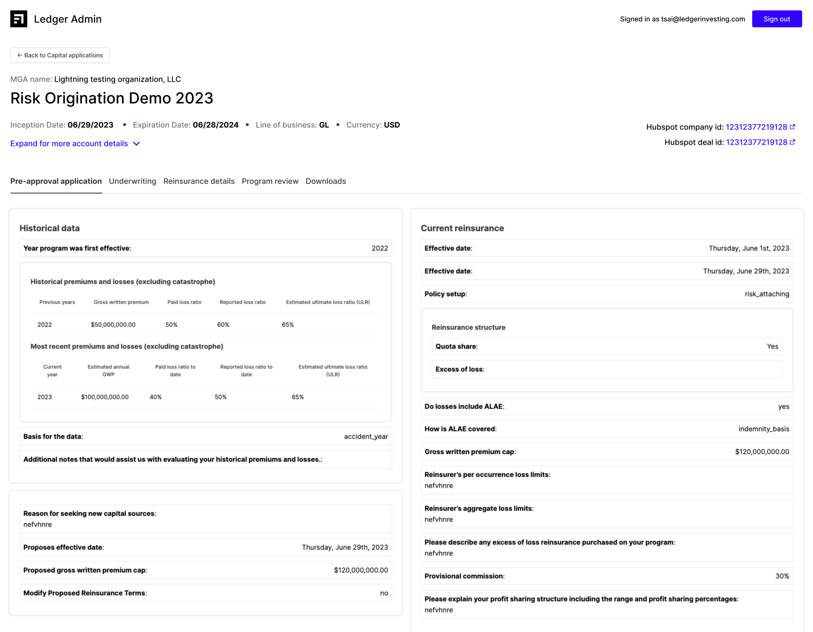 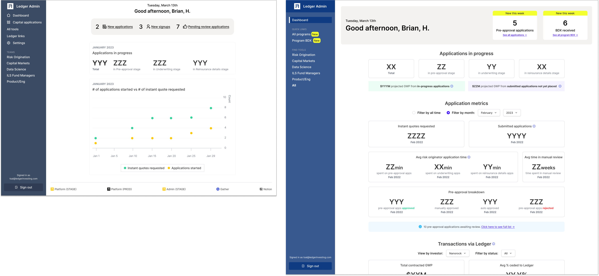04. Design + hand-off
To build v1.0 of the Admin portal, we added a footer for frequently used company links, improving access to key pages. The main page now serves as a data dashboard with categorized user links for easier navigation. Data is prioritized for risk management, showing program statuses and allowing task adjustments. We cleaned up tool and detail pages, enhanced navigation, and deferred some UI personalization for future updates. Post-launch feedback has been positive, with increased team usage.
We broke the design into phases and sprints, using ready-made components to speed up development. Early reviews with engineers and user testing ensured technical feasibility and improved flows. Our quick, low-fidelity design process involved rough sketches and comparative research to create effective dashboards. Collaboration with the PM and engineers helped bring these designs to life, with ongoing updates to key navigation elements. This phased, user-focused approach resulted in a robust, user-friendly v1.0 of the Admin portal.
05. Outcomes
The first release of the new internal admin in September sparked a 50% increase in internal traffic, despite being in its initial stage. We also noticed significantly shorter sales cycles, reducing the time between customer steps to just weeks. As enthusiasm grew, I began sharing plans for incorporating more metrics and analytics, transforming the platform from a mere data repository to an actionable workspace.
This experience highlighted the importance of user feedback, iterative design, and early collaboration with engineers, proving that a well-designed admin platform can greatly enhance operational efficiency and team collaboration.